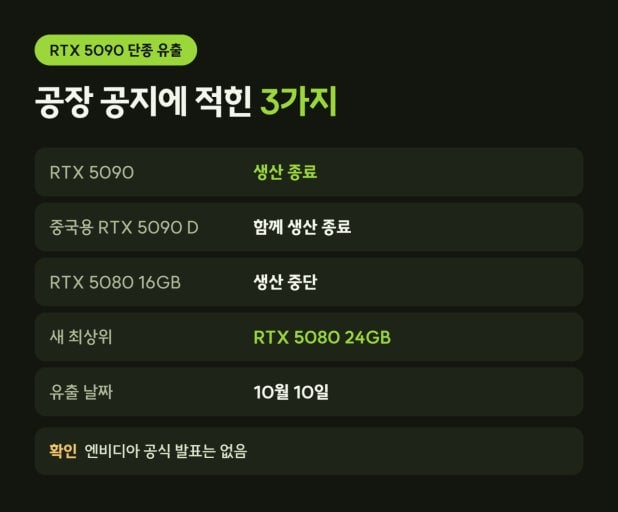

그래픽카드 고장이 났을때 AS를 보내면
화면 출력이 안됨.
>> 아 고객님 이건 살릴 수가 없네요. 당사 매뉴얼에 따라 '폐기'조치 하였습니다.
화면은 출력되는데 팬이 안돌아감.
>> 아 고객님 이건 살릴 수가 없네요. 당사 매뉴얼에 따라 '폐기'조치 하였습니다.
케이스와 연결 하는 부속이 부러짐.
>> 아 고객님 이건 살릴 수가 없네요. 당사 매뉴얼에 따라 '폐기'조치 하였습니다.
DP 포트하나가 찝혀서 고장남.
>> 아 고객님 이건 살릴 수가 없네요. 당사 매뉴얼에 따라 '폐기'조치 하였습니다.
후면에 기스가 났음.
>> 아 고객님 이건 살릴 수가 없네요. 당사 매뉴얼에 따라 '폐기'조치 하였습니다.
플라스틱 케이스 모서리가 부서짐.
>> 아 고객님 이건 살릴 수가 없네요. 당사 매뉴얼에 따라 '폐기'조치 하였습니다.
그냥 보내봄.
>> 아 고객님 이건 살릴 수가 없네요. 당사 매뉴얼에 따라 '폐기'조치 하였습니다.
마치 답이 정해진듯한
지옥의 AS가 시작된다아앗

좀쓰다 파는게 좋을거같다